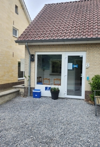

Contact & Openingstijden
Om een afspraak te maken belt u tijdens openingstijden of kunt u mailen. Indien u mailt dan aantal dagen en tijdstippen doorgeven wanneer u wilt langskomen.
Openingstijden
| Maandag | 9.00–12.00 en 12.30–18.00 |
|---|---|
| Dinsdag | 9.00–12.00 en 12.30–17.00 |
| Woensdag | 9.00–12.00 en 12.30–17.00 |
| Donderdag | 9.00–12.00 en 12.30–17.00 |
| Vrijdag | 9.00–12.00 en 12.30–18.00 |
| Weekend | Gesloten |
Pauze van 12.00 tot 12.30 uur. De avonddienst gaat door de weeks in vanaf 17.00 uur.
Praktijkgegevens
| Adres | Dierenartspraktijk (DAP) De Korenwolf Lindenstraat 8 6325 PB Berg en Terblijt |
|---|---|
| Telefoon | 06-455 60 220 |
| dapdekorenwolf@hotmail.com Ik probeer binnen 1 tot 3 werkdagen uw e-mail of sms te beantwoorden; in het weekend wordt de e-mail en sms niet gelezen. |
|
| BTW-id | NL001838190B04 |
| Bankrek. | NL58ABNA0447939211 |
| KvK | 14126029 |
Nieuwe gezelschapsdierenklant worden, zie Actueel voor de voorwaarden.
Landbouwhuisdierenklant worden, zie Landbouwhuisdieren voor de voorwaarden.
Route en parkeren
De praktijk ligt in Heerlijkheid Terblijt. U kunt gewoon parkeren op de oprit voor bij de praktijk.
